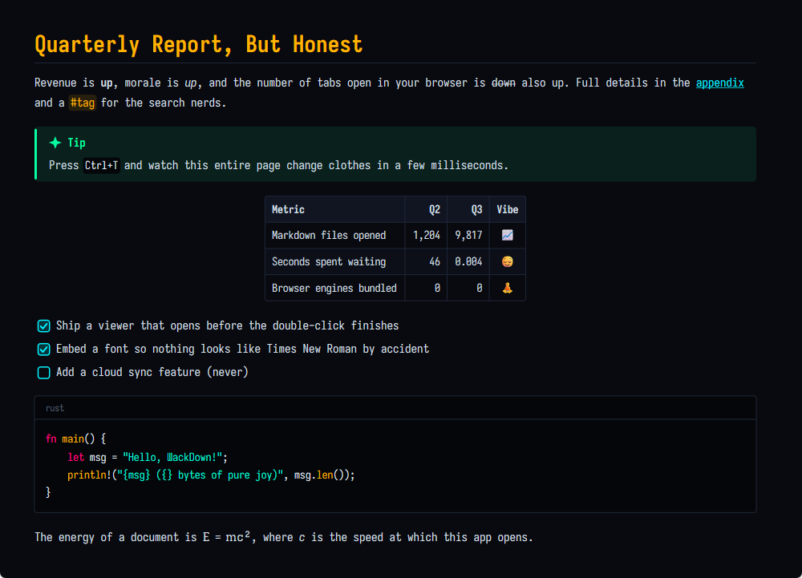

Markdown, turned on its head.
A Markdown viewer for Windows that opens before you've finished double-clicking. Three megabytes. No browser inside. No account. No sidebar that wants to be your friend.
Latest release: …

In the app you press T. Here you have to click, like an animal.
readme.txt. Notepad appears. Instant. Nobody is impressed; that's just how computers work..md in a text editor and squint at the asterisks. Instant, but ugly.Times for other apps are from memory and mild resentment, not benchmarks. The 2 ms figure is from our own test suite on an ordinary desktop. Your mileage may vary; it will still be short.
A feature list, but for the features we're proudest of not having.
It lays out only what fits on your screen before the window appears, and does the rest a few milliseconds at a time while you read. The scrollbar politely estimates the length until it knows.
Direct2D and DirectWrite, straight from Rust. Every frame is timed to your monitor's refresh rate, so scrolling and zooming feel like they belong to the OS, because they do.
Cyberpunk Terminal, Tokyo Dusk, Monokai Pro Rust, Nordic Fjord, Solarized Deep Dark and Paper & Gutenberg. Each pairs its own body, heading and code fonts. Write your own in a few lines of JSON.
Iosevka, in monospace, sans and serif cuts, embedded in the exe. Your documents look the same on every machine, including the one where somebody uninstalled the fonts.
Keep your real editor open next to it. Hit save, and ƜackDown has already redrawn by the time you look over. No "file changed on disk" dialog, because what else would you want?
Long lines scroll sideways instead of wrapping in the middle of Api.Integrators. Syntax colors for a dozen languages. A Copy button appears when you hover, then goes away again.
TeX becomes Unicode: $E = mc^2$ renders as E = mc², \alpha \leq \beta as α ≤ β. Matrices and other things Unicode can't say are shown as source, honestly, instead of wrong.
Tables, task lists, footnotes that link both ways, callouts with real icons, definition lists, [[wiki links]], H~2~O, 2^10^, {#custom-ids}. Mermaid diagrams are shown as code. We're sorry. We're not that sorry.
Everything is a key away: zoom, themes, back, select all, copy, a help page on F1. The mouse is welcome too. It just isn't required.
Installed size. Lower is better, unless you enjoy progress bars.
* Estimate. It's always an estimate; it updated itself while we were measuring. We tried to fit on a floppy. Two floppies. We'll keep trying.
No. ƜackDown talks directly to Windows' graphics stack, which is the entire reason it's small and fast. A port would mean a portability layer, and then we'd be the thing we're making fun of.
Also no. See above, but with more goodwill.
No. You already have an editor you like. Open the file there, keep ƜackDown next to it, and every save shows up instantly. Two small tools beat one big one; this was known in 1995.
Because it's Markdown, turned on its head. The letter is Ɯ, U+019C, "Latin capital letter turned M". It has been sitting in Unicode since 1993 waiting for a job. We gave it one.
Correct, and Windows is being honest: the files aren't code-signed yet, because certificates cost either money or reputation and we're starting with neither. Click More info → Run anyway, or verify the SHA-256 checksum published with every release, like the responsible adult you are. Starring the repo helps us qualify for free signing. That's not a joke; it's literally how the program works.
One tiny JSON file in %APPDATA%\WackDown that remembers your theme, zoom and window size. Drop your own themes in a folder next to it. That's the whole configuration story.
It shows their alt text, which is more than most people write. Real image rendering is on the list. Mermaid diagrams are shown as code, which is technically rendering.
An AI coding assistant (Claude Code), with a human holding the leash, reviewing the work and making the rude design decisions. The code is GPL-3.0, so you can read every line and judge for yourself.
.md files politely, without stealing them from an app you've already chosen.SHA256SUMS.txt on the release page first.